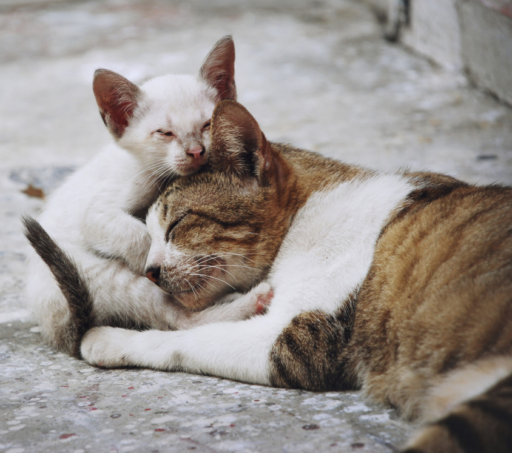

AJUDE GATOS DE RUA

Você pode ajudar via Pix usando a chave: (85) 9.9999-9999
Vaquinha criada em: 08/11/2024
A ONG HelpCats usará as doações para alimentar, vacinar, castrar e fornecer tratamento veterinário aos gatos de rua. Além disso, os recursos serão destinados à criação de abrigos temporários e campanhas para incentivar a adoção responsável, oferecendo a esses animais mais saúde, segurança e a chance de encontrar lares acolhedores.
10%